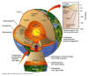
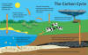
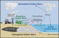
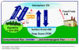
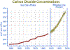
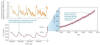

Videos
- Two videos on layers of the Earth, similar coverage with slightly
different styles:
- Video on the basics of the
carbon cycle
What makes a planet habitable?
- The primary factors that appear to make Earth habitable are its
relatively large size and its distance from the Sun.
- Distance from the Sun, along with the greenhouse effect, determines
surface temperature. For habitability, surface temperature must be in a
range within which liquid water can exist on the surface.
- The greater the size, the longer a planet can retain enough internal
heat to drive various geological processes (e.g., volcanic outgassing)
which build up and maintain a dynamic hydrosphere. A large size (high
gravity) also
helps a planet retain atmospheric gases and slow down their escape into
space.
- A magnetosphere protects the atmosphere from being stripped away by
solar wind (charged particles). The requirements for a magnetosphere to
exist are liquid metal in the core and a sufficiently fast rotation.
Small planets cool too fast to retain a sufficiently molten core.
- Both factors, size and distance, have contributed to secondary
factors which maintain climate stability on Earth.
- Once started, living
organisms themselves can have a stabilizing effect on the environment.
Check out this tutorial on
Daisyworld, a hypothetical world in which daisies can
regulate temperature.
- Earth's relatively large size has allowed it to retain much of its
internal heat to drive a very active geology.
- Plate tectonics allows carbon (and other elements) trapped at the
surface to be recycled back into the hydrosphere. The greenhouse gas
carbon dioxide is the major temperature regulator on Earth.
- If the Earth were as big as a Jovian planet, it would retain H and
He in its atmosphere. This would result in an atmosphere that is too hot
for for liquid water to exist.
- Thus, to be hospitable to life, a planet cannot be too hot or too
cold, or too big or too small. A rough estimate is within the range of
0.2-10 Earth masses. Conditions have to be "just right", hence the label
Goldilocks
principle.
- Mercury and the Moon, similar in size and appearance, are both
geologically dead because of their relatively small size.
- Mars is bigger than Mercury but not big enough to have retained enough
geological activity to continuously replenish the atmosphere, which is
constantly lost to space.
- Venus, only slightly smaller than Earth, is geologically active.
However, excessive exposure to solar radiation due its proximity to the Sun
has pushed it into a runaway greenhouse effect.
Processes shaping the Earth's surface
- Virtually all geological features originate from the following
surface-shaping processes:
- Impact cratering
- Craters are typically about 10 times as wide as the impactor and
about 10-20% as deep as they are wide.
- Impactors typically have an impact speed in the range
40,000-250,000 km/h.
- Volcanism
- The old view was that Earth's atmosphere and oceans were
produced by volcanic outgassing.
- Recent studies suggest that the atmosphere and oceans possibly
originated primarily from a late bombardment by comets, which
deposited materials rich in gas and water.
- Tectonics
- Erosion
Atmospheres of the terrestrial planets
- About two-thirds of the air in our atmosphere lies within 10 km of the
surface.
- The atmosphere protects us from harmful, short-wavelength radiation (UV,
x-rays, gamma rays, etc.).
- Greenhouse gases (CO2, H2O, CH4) in the
atmosphere keep the Earth relatively warm.
- Without the so-called greenhouse effect, the average surface
temperature on Earth would be around -16
°C, well below the freezing temperature of water.
- With the greenhouse gases, the average surface temperature on Earth
is around 15 °C.
- The warming effect of the greenhouse
gases is known as the greenhouse effect.
- Mercury, like the Moon, is too small to retain any atmosphere.
Furthermore, Mercury is geologically dead, so no new atmosphere is being
produced.
- Mars has a very thin atmosphere (atmospheric pressure on Mars is less
than 1% that on Earth) consisting mostly of CO2.
- Originally, Mars was warmer and wetter and had a much denser atmosphere.
- Mars underwent a major and permanent climate change about 3 billion
years ago.
- The loss of the Martian atmosphere was probably accelerated by a
weakening magnetosphere, as Mars cooled and its core solidified.
- Venusian atmosphere is 96% carbon dioxide and atmospheric pressure at
the surface of Venus is 90 greater than that on Earth.
- Earth is the only planet in our solar system known to have a significant
amount of free oxygen (O2) in
its atmosphere.
- The oxygen in Earth's atmosphere and oceans primarily comes from
photosynthesis, a metabolic process carried out by plants, algae, and
some types of bacteria.
- Photosynthesis is fundamental to life on Earth, as it provides the
oxygen needed for aerobic respiration, which is used by most living
organisms to generate energy.
- Earth originally started accumulating oxygen in the atmosphere
during the so-called Great Oxygenation Event that
occurred around 2.5 billion years ago (about 2 billion years after the
formation of Earth). During this event, cyanobacteria, also known as
blue-green algae, began releasing oxygen as a byproduct of
photosynthesis, which gradually led to the oxygenation of the atmosphere
and oceans. This ultimately paved the way for the development of aerobic
organisms and the complex ecosystems we see today.
- Cyanobacteria, which are believed to be the earliest photosynthetic
organisms, are still present today and are found in a wide range of
environments, including freshwater and marine ecosystems, as well as
soil and symbiotic relationships with other organisms. They are
considered to be one of the most important groups of microorganisms in
terms of their impact on the Earth's atmosphere and the evolution of
life on our planet.
Magnetosphere
- The Earth has a strong magnetosphere which deflects most of the charged
particles from the Sun (solar wind), as discussed in this short
video.
- In the absence of a protective magnetosphere, solar wind can strip a
planet of its atmospheric gasses.
- The magnetospheres of the other terrestrial planets are much weaker than
that of the Earth.
- The magnetosphere appears to result from the combined effects of liquid
metal in the core, enough internal heat to drive convection, and a
relatively rapid rate of rotation.
- The Jovian planets have strong magnetospheres because, like Earth,
they spin fast (with a period of 10-17 hours) and are still molten in
their cores.
- Mercury has a large iron core but it is a relatively small planet (not
much bigger than our Moon) and has cooled to the point of being geologically
dead. It also has a slow 59-day-long rotation. The combined effect is a
magnetic field about 1% as strong as the Earth’s.
- Due its very slow 243-day-long rotation, Venus has virtually no
magnetosphere.
- Mars, intermediate in size between Mercury and Earth, has cooled
significantly but probably retains some internal heat, but not enough for a
significant magnetosphere.
Layers of the Earth
- Crust--thin outer layer of the Earth
- Mantle--just below the crust, magma (molten rock) can erupt from here
and reach the surface as lava
- Lithosphere--solid, outer part of the Earth, consisting of the
brittle upper portion of the mantle and the crust; lithosphere is
'broken' into tectonic plates
- Asthenosphere--molten, slushlike upper layer of the mantle just
below the lithosphere; tectonic plates move on top of the asthenosphere
- This
video explains the movement of the tectonic plates.
- The big difference between the lithosphere and asthenosphere is how
the two layers respond to stress. The lithosphere remains rigid for very
long periods of geologic time in which it deforms elastically and
through brittle failure, while the asthenosphere deforms viscously and
accommodates strain through plastic deformation.
- Outer core--liquid, with lots of iron and nickel
- Inner core--solid, with lots of iron and nickel
- There are three main sources of heat in the deep earth:
- radiogenic heat from the decay of radioactive elements (Potassium
40, Uranium 238, Uranium 235, and Thorium 232) contained within the
mantle; this is probably the biggest contributor
- promordial heat left over from the formation of the Earth
(accretion)
- frictional heating, caused by denser core material sinking to the
center of the planet (differentiation)
- These videos describe the
layers and
sources of heat.

Hydrosphere
- Earth is the only planet with liquid water on the surface.
- Water vapor outgassed from volcanoes rained down on the surface to
make the oceans.
- Moderate greenhouse effect and distance from the Sun kept the water
in the liquid state.
- The characteristics which appear to have made Earth special are size
and a "comfortable" distance from the Sun.
- Mercury is often compared to our Moon because the two share a very
simple history. Because both are considerably smaller than Venus, Earth, or
Mars, they cooled much more rapidly than the other terrestrial worlds and
are now geologically dead. No mechanism (i.e., volcanic
outgassing) exists to replenish the atmosphere, which was lost to space long
ago.
- Venus is only 5% smaller than the Earth and is geologically active.
Nevertheless, it has no water on or around its surface and has a very high
surface temperature.
- Although Venus is only 30% closer to the Sun than Earth, the
difference was apparently critical to its very different evolution.
- Early in its evolution, the atmosphere of Venus was filled with
water vapor, carbon dioxide, and other products of volcanic outgassing,
not fundamentally different from the picture on early Earth. However,
the greater intensity of sunlight on Venus did not allow the formation
of oceans. Without a large reservoir of liquid water to dissolve and
trap carbon dioxide, the atmosphere soon became overrun by carbon
dioxide, which ultimately lead to a runaway greenhouse effect.
- Mars contains ice in the polar regions and evidence of water erosion
suggests that liquid water may have flowed on the surface of Mars a billion
or more years ago.
- Early geological activity on Mars probably generated an atmosphere
consisting of water vapor, carbon dioxide, and other gases.
- Due to its relatively small size, however, Mars cooled quickly. As
it cooled, it lost much of its geological activity, and was thus not
able to replenish gasses lost to space. In addition, a cooling interior
also resulted in a weakening magnetic field. Without a strong
magnetosphere, water was left vulnerable to attack by solar wind, which
split water molecules into hydrogen and oxygen. Hydrogen is a light gas
and quickly escaped into space. Oxygen rusted the Martian rocks, giving
the "Red Planet" its distinctive color.
Carbon dioxide cycle
- Carbon (C), the fourth most abundant element in the Universe, after
hydrogen (H), helium (He), and oxygen (O), is the building block of life.
It’s the element that anchors all organic substances, from fossil fuels to
DNA.
- Carbon is stored on our planet in the following major
sinks:
- as organic molecules in living and dead organisms found in the
biosphere
- organic matter in soils
- atmospheric carbon dioxide
- lithosphere, which includes fossil fuels and sedimentary rock
deposits such as limestone, dolomite, and chalk
- oceans, which include dissolved atmospheric carbon dioxide and
calcium carbonate shells in marine organisms.
- On Earth, carbon constantly cycles through the hydrosphere, biosphere,
land, and the Earth’s interior. This global carbon
cycle can be divided into two categories: the geological, which operates
over large time scales (millions of years), and the biological/physical,
which operates over shorter time scales (days to thousands of years).
- The geological carbon cycle can be summarized as follows:
- Atmospheric CO2 dissolves in rainwater, which becomes
mildly acidic.
- The mildly acidic rainwater erodes rocks and ultimately carries
broken-down minerals to the oceans.
- In the oceans, the eroded minerals combine with dissolved CO2
and fall to the ocean floor in the form of carbonate rocks, such as
limestone.
- Over millions of years, tectonic activity carries the trapped CO2
into the mantle, from where CO2 is eventually released
through volcanic outgassing.
- The balance between weathering, subduction, and volcanism controls
atmospheric carbon dioxide concentrations over time periods of hundreds of
millions of years. Because of its significant contribution to the greenhouse
effect, the Earth's CO2 cycle acts as a long-term thermostat on
Earth.
- With mild temperature variations, the higher the temperature, the
higher the rate at which CO2 is removed from the atmosphere
via the carbon dioxide cycle.
- A slight increase in temperature results in more evaporation and
rain. More rain results in more efficient deposition of carbonate rock
in the ocean floors. Less atmospheric CO2 implies less
greenhouse effect and thus a cooling.
- A slight decrease in temperature results in less evaporation and
rain. Less rain results in less efficient deposition of carbonate rock
in the ocean floors. This allows outgassed CO2 to build up in
the atmosphere, thereby strengthening the greenhouse effect.
- Biology also plays an important role in the movement of carbon into and
out of the land and ocean through the processes of photosynthesis and
respiration.
- Nearly all forms of life on Earth depend on the production of sugars
from solar energy and carbon dioxide (photosynthesis) and the metabolism
(respiration) of those sugars to produce the chemical energy that
facilitates growth and reproduction.
- Photosynthesis removes carbon dioxide from the atmosphere
while respiration returns carbon dioxide to the atmosphere. The amount
of carbon taken up by photosynthesis and released back to the atmosphere
by respiration each year is roughly 1,000 times greater than the amount
of carbon that moves through the geological cycle during the same
period.
- Photosynthesis and respiration also play an important role in the
long-term geological cycling of carbon. The presence of land vegetation
enhances the weathering of soil, leading to the long-term—but
slow—uptake of carbon dioxide from the atmosphere. In the oceans, some
of the carbon taken up by phytoplankton (microscopic marine plants that
form the basis of the marine food chain) to make shells of calcium
carbonate (CaCO3) settles to the bottom (after they die) to
form sediments. All of these biologically mediated processes represent a
removal of carbon dioxide from the atmosphere and storage of carbon in
geologic sediments.
- In addition to the natural fluxes of carbon through the Earth system,
anthropogenic (human) activities, particularly fossil fuel burning and
deforestation, are also releasing carbon dioxide into the atmosphere.
- In burning fossil fuels, which formed over millions of years, we are
effectively moving carbon much more rapidly into the atmosphere than is
being removed naturally through the sedimentation of carbon.
- Also, by clearing forests to support agriculture, we are
transferring carbon from living biomass into the atmosphere (dry wood is
about 50% carbon). The result is that humans are adding ever-increasing
amounts of extra carbon dioxide into the atmosphere.
- About 25% of the anthropogenic CO2
is absorbed by the oceans, 25% by trees and vegetation, and the rest
stays in the atmosphere, possibly for thousands of years.
- Since the beginning of the industrial revolution around 1850, human
activity has resulted in an increase of about 50% in atmospheric
CO2.
- While natural processes can absorb some of the 6 billion metric tons
(measured in carbon equivalent terms) of anthropogenic carbon dioxide
emissions produced each year, roughly half is still added to the
atmosphere annually. The Earth’s positive imbalance between emissions
and absorption results in the continuing growth in greenhouse gases in
the atmosphere.



Climate Change/Global Warming
- Global average temperature on Earth has risen about 0.8 C°
in the past century.
- The current atmospheric concentration of
carbon dioxide is rising rapidly and is currently about 30% higher than it
has been at any time during the past half-million years or longer.
- The evidence is almost unanimous in the
scientific community that at least part of the increase is surely
anthropogenic (i.e., caused by human activities):
- Burning fossil fuels (coal, oil,
natural gas), which returns to the atmosphere carbon that has been
locked within the earth for millions of years.
- Clearing and burning of forests,
especially in the tropics. In recent decades, large areas of the Amazon
rain forest have been cleared for agriculture and cattle grazing.
- Historical data
from ice cores and modern data collected from the Mauna Loa observatory
in Hawaii support the the notion that atmospheric CO2 has
been rising since the beginning of the Industrial Revolution
- Atmospheric CO2
has risen by about 50% since the beginning of the Industrial
Revolution (~1850).
- According to careful measurements, atmospheric concentration of
carbon dioxide and global average temperature
over the past 400,000 years appear to be intimately linked. More carbon
dioxide goes with higher temperature, and vice versa.
- Consequences of global warming may include
the following:
- Flooding of coastal regions.
- Alteration of oceanic currents.
- Increased incidence and severity of
storms and hurricanes.
- More severe winter conditions.
- According to current estimates (based on
computer simulations), a doubling of the CO2 concentration
(expected by the end of this century) will cause the Earth to warm by an
amount somewhere in the range of 2.5–3.5 C°.

